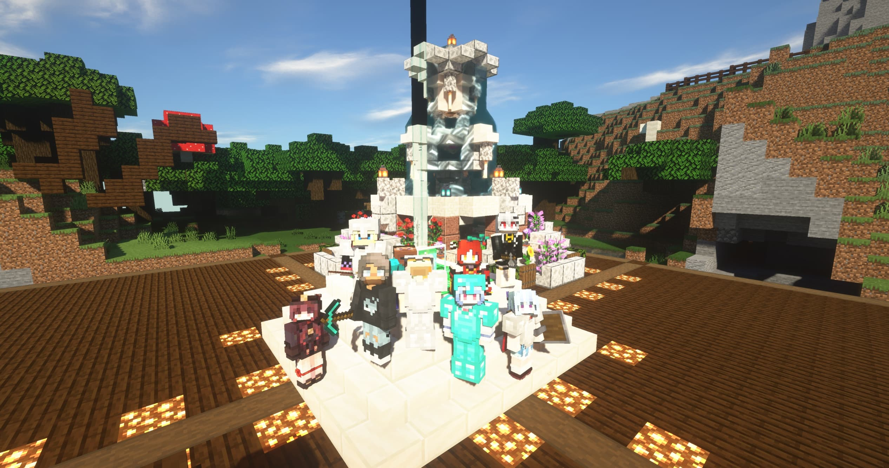
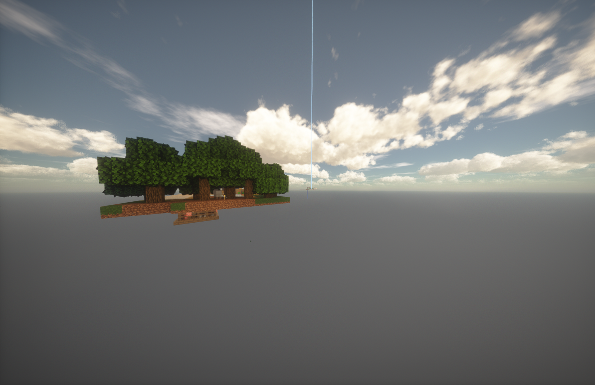
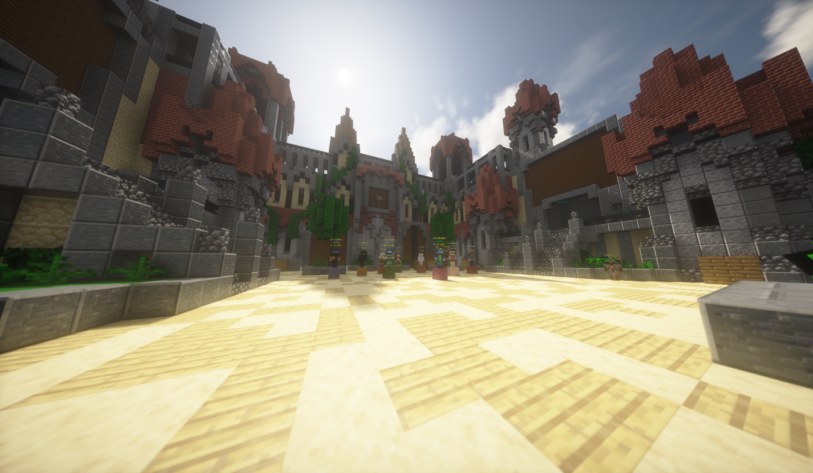
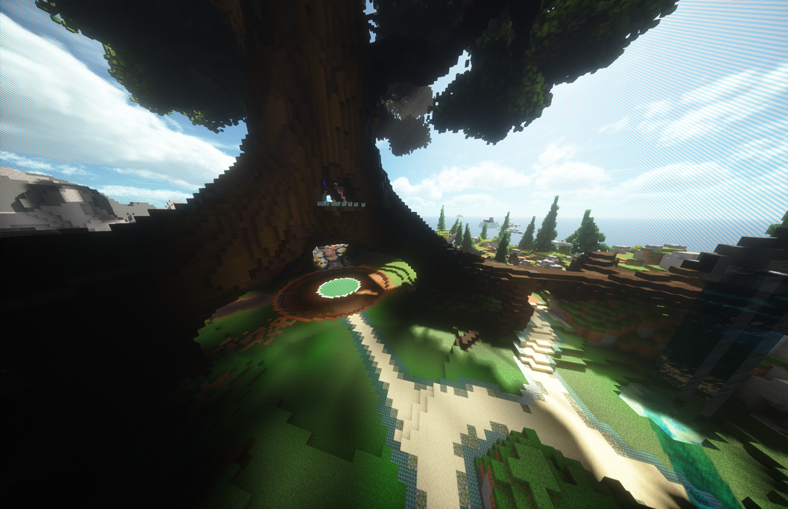
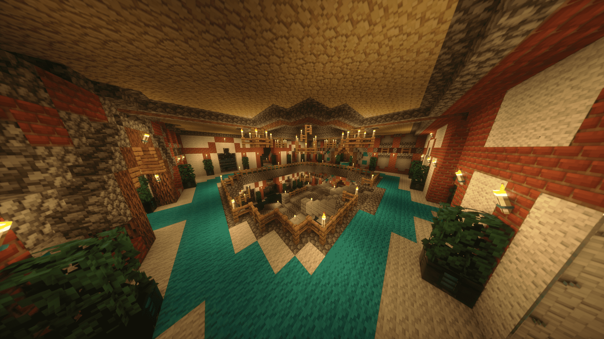
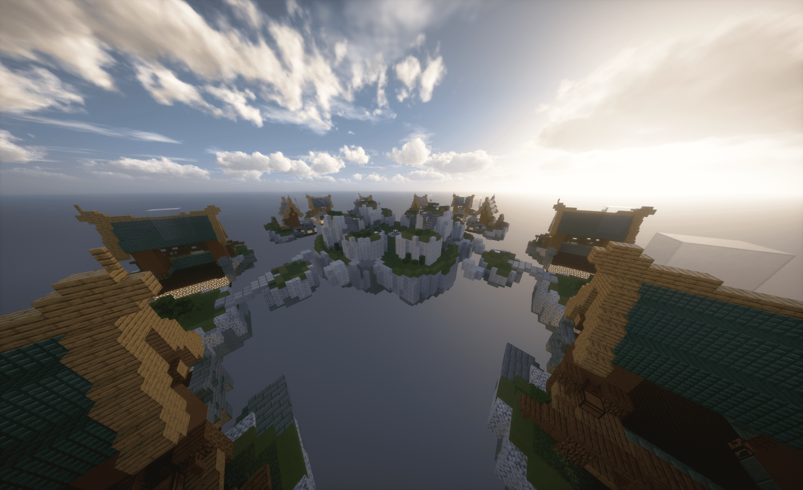

完美体验Performance
本服务器采用BGP三线优化的VPS
保证玩家的游戏流畅性与稳定性
同时拥有先进的反作弊
注重玩家游戏体验，让外挂无处遁形
本服务器采用BGP三线优化的VPS
保证玩家的游戏流畅性与稳定性
同时拥有先进的反作弊
注重玩家游戏体验，让外挂无处遁形
本服是和谐温馨的小型公益服
即使你的财产不保护，也应该没有玩家会来盗取
服务器管理团队由学生组成
拥有丰富的开服与服务器维护经验，我们致力于提供给玩家好的体验
CREATEFUL 的服务器核心配方，是一个个相互串联的玩法

配方 1 生存我们的主服务器，提供原汁原味的Minecraft生存体验

配方 2 生存创见独家打造，从一个方块开始打造独一无二的世界

配方 3 趣味多样的游戏玩法，多人游戏更欢乐！

配方 4 PVP创见独家打造，信仰之跃，然后战斗

配方 5 休闲、挑战村庄正在被入侵，村民需要你的帮助！

配方 6 PVP创见独家打造，PVP综合能力的考验
注：为了营造更好的环境，某些服务器可能启用了游玩限制；这些限制是非强制付费的，您可以通过游玩其他服务器获取权限。
四年，从面板服起步，一路走到全新开荒的今天
YIFUMC诞生
升学压力下不得不关闭服务器
重新开服，却因年少气盛反复重置世界，玩家心血一夜清零，人也越来越少。
一次赌气解散了 QQ 群、再次关服，也与曾最信任的玩家走散。
更名CREATEFUL，更换 BGP 服务器、重新设计玩法、认真写插件配置，从头优化玩家体验。
四年经历沉淀成经验，全新的创见服务器开荒。
这段历程还没有写完，下一段由你落笔。
我的服务器，四岁了。
我从来没有在B站发过专栏，之所以说我的服务器四岁了，可以参考https://www.bilibili.com/opus/699029279295406103
那个时候我初二升初三，拿着一台几十块一个月的面板服，笨拙地搭起了这个世界。那时候有很多人陪我——两百多个注册玩家，最高日活二三十人。他们帮我宣传、陪我熬夜、在里面盖了很多漂亮的房子。
正如他的置顶评论。我跑路了，面临中考压力，迫不得已我关闭了服务器。我无法对在服务器里倾注了心血的玩家负责，那时我没有这个能力。
中考过后，服务器也运行过，可是我当时太傻了。年少气盛，觉得"重来一次"没什么大不了，一次又一次地重置世界。玩家们辛辛苦苦盖房子、攒物资，一夜之间什么都没了。慢慢地，人越来越少，群里越来越安静。一次开服，有玩家嘲讽我，受不了的我赌气解散了QQ群，关掉了服务器，跟那些曾经最信任我人，彻底走散了。
我也不知道为什么，当时我会这么傻。凭什么他们要选择一个，没有优化、没有反作弊，玩家有问题和腐竹一起查百度的服务器。
现在，我高考结束了。时间比以前多了很多，我把服务重新搭了起来。换了BGP服务器，重新设计了玩法，认认真真写了插件配置，优化了玩家体验。
（可以在这里看我跑路了没 https://dashboard.createful.cn）
可是我自以为是地认为，做好了人会自动来。事实并非如此。
日常就是0人在线。
我想找点建筑宣传服务器，于是在玩家上线的时候我问了他。
这时，也就是写下这篇文章的前一个小时，死去的记忆又开始攻击我。我真是犯浑，真辜负了之前的玩家们。
没有玩家--没有新人--老玩家流失--鬼服
这是我不想看见的，不愿面对的情况。现在我高考结束，有了时间，有了精力，有了决心。
"四年老服"不只是一个标签。它意味着：这个服务器有故事、有沉淀、有经验，不会像那些三天热度小服务器一样突然消失。服务器在，承诺就在。
"全新开荒"也不只是一个噱头。它意味着：无论你是什么时候进来的，此刻进来，你就是这个世界的开拓者。没有老玩家比你多玩两年等级压制，没有遍地都是的废弃建筑，一切都等你来书写。
于是，就有了 全新的CREATEFUL服务器。
如果你有兴趣听完我的故事 欢迎访问服务器官网 createful.cn
来自社区的真实建筑与回忆
致力于提供最佳的游戏体验
腐竹 YIFUOWNER
服务器创始人兼主要开发者
负责服务器整体运营和技术支持
座右铭：全心全意
管理 理塘ADMIN
负责玩家管理和社区建设
处理日常事务和玩家纠纷
座右铭：游戏内问题咨询首选
技术 whyDEV
负责服务器技术维护
插件开发和性能优化
座右铭：你觉得真的那就是真的